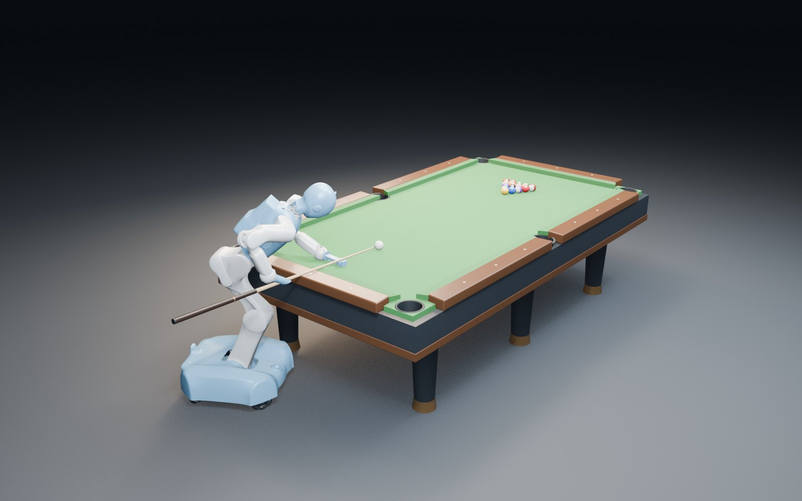
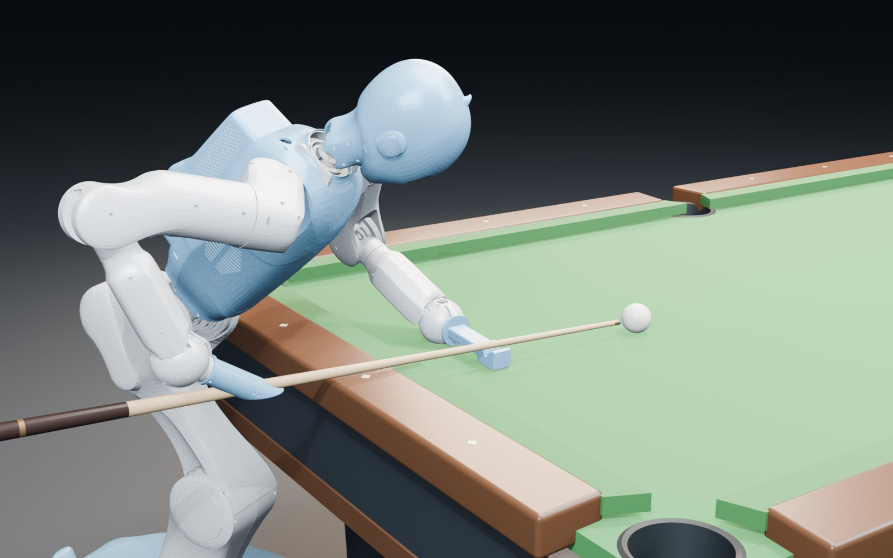
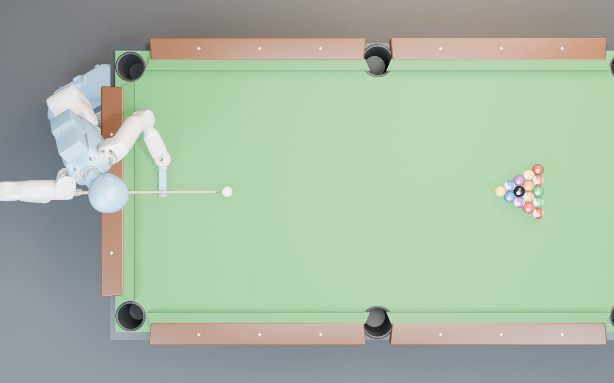
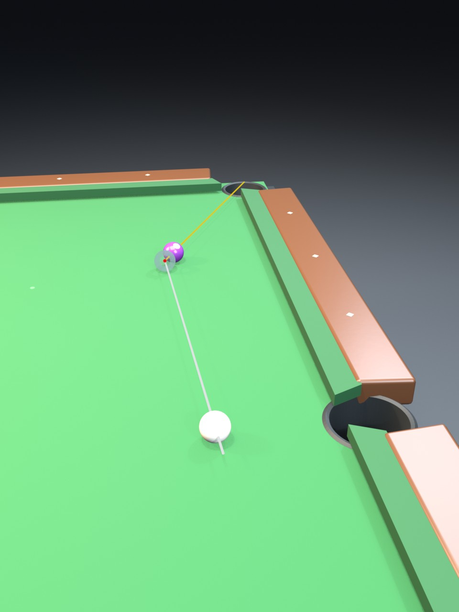

场景
Scene
自助球房经常只有一个人守一张桌。这版应用把轮臂收成店里的陪打：人说要练什么，机器人走到桌边，看台面，出一杆，再用语音把这一杆讲清楚。
Self-service halls often leave one person on a table. This app turns a wheeled arm into the in-house partner: the person says what to practice, the robot comes to the table, reads the layout, takes a stroke, and explains it by voice.
图示
Visuals
下面是示意图和仿真回放，不是现场照片：三张 AI 生成的概念渲染、一张击球几何示意，再加一段出杆后的球路回放，用来说明轮臂、球桌和出杆之间的关系。
Below are illustrations and a simulation replay, not photos of the demo: three AI-generated concept renders, a shot-geometry diagram, and a post-shot trace, showing how the wheeled arm, the table, and the stroke relate.




连续八杆
Eight Shots
仿真里从八个球位各打一杆。主画面是第三人称，右侧同时给头部相机和球桌俯视，用来看移动、看球和出杆能不能串成一条流程。
Eight shots from eight positions in simulation. The main frame is third-person, with the head camera and a top-down table view alongside, to see whether moving, seeing, and stroking hold together as one flow.
母球九击点
Nine Hit Points
同一个球位换九种击点各打一杆。每段同时给出头部相机、球桌俯视、母球击点（计划与实际接触点，偏差精确到毫米）和母球旋转特写，用来对照不同击点对应的旋转。
The same layout, struck at nine different points on the cue ball. Each segment shows the head camera, the table top-down, the contact point (planned versus actual, down to the millimetre), and a spin close-up, so the spin for each hit point can be compared side by side.
我负责的部分
My Part
场景和能力编排
Scene and capability orchestration
两天里把题目收成一个能现场演示的场景 App：定义一人守桌时的陪练、陪打和简易教学，把移动、看球、出杆和语音交互编排进同一条服务。
In two days I turned the brief into a scene app that could be shown on site: practice, play-along, and basic coaching for a single player, with mobility, ball perception, stroking, and voice in one service.
现场交付
On-site delivery
在星尘 T1 和 Astribot OS 上完成赛期演示。深圳站二等奖，并晋级 2026 年 10 月 24–25 日全国总决赛。
Demonstrated on an Astribot T1 running Astribot OS. 2nd prize in Shenzhen, and advanced to the national finals on Oct 24–25, 2026.
当前可以公开说的范围
What This Page States
- 这是星尘 OS 黑客松深圳站的作品，不是 PhotoMate。
- 现场演示覆盖移动、看球、出杆和语音交互。
- 感知、击球规划和语音的实现细节还没写进本页。代码仓库未公开。
- 本页的图与回放是示意和仿真，不是现场记录。
- This is the Astribot OS Hackathon (Shenzhen) entry, separate from PhotoMate.
- The on-site demo covered moving, seeing the balls, stroking, and voice.
- Perception, shot planning, and dialogue internals are not on this page yet. The repository is not public.
- The images and replay on this page are illustrations and simulation, not recordings of the demo.